Asesoría PC1
Diseño de Base de Datos
Requisito previo
REQUISITO PREVIO
Para esta práctica necesitas tener tu sistema modelado conceptualmente. Ese trabajo fue desarrollado en el curso de Modelado Conceptual de Datos (MCD).
¿No llevaste MCD con el profesor actual?
Debes conocer a fondo el sistema que vas a diseñar: su lógica, sus procesos y sus datos. Búscate los recursos necesarios y familiarízate con él antes de la práctica.
¿Con qué herramienta diseño mi prototipo?
- Especializada en wireframes y prototipos
- Interfaz simple y rápida de aprender
- Ideal para diseño de pantallas
- Versión de prueba disponible
- Diseño profesional y colaborativo
- Trabajo en equipo en tiempo real
- Mayor curva de aprendizaje
- Versión gratuita disponible
- PowerPoint
- Canva
- Diagrams.net
- Marvel App
Lo importante no es la herramienta, sino la claridad y calidad del diseño que produces con ella.
¿Qué espera ver el profesor?
- Cajas vacías sin contenido real
- Sin URL ni nombre del sistema
- Sin navegación entre pantallas
- Solo una pantalla por módulo
- Datos sin coherencia con el sistema
- Pantallas con datos representativos
- URL visible y coherente con el sistema
- Botones, menús y flujos definidos
- Todos los componentes del módulo
- Coherente con la arquitectura presentada
El profesor revisará cada pantalla durante la exposición oral. Debes poder explicar cada elemento que aparece.
Base teórica del diseño externo
¿Qué es el Diseño Externo?
Es la representación visual de cómo los usuarios interactúan con el sistema a través de sus interfaces.
- Pantallas de acceso y control de usuarios
- Menús de navegación del sistema
- Formularios, catálogos y tablas de datos
- Consultas, reportes, KPIs y gráficas
- Protocolos y flujos del proceso principal
- Módulos de mantenimiento y contingencia
- Código fuente ni programación
- Diseño físico de tablas (IC, capacidad)
- Implementación real del sistema
- Diagramas ER ni modelo conceptual
Implementar el sistema no garantiza mejor nota. Lo que se evalúa es la calidad del diseño externo.
¿Qué es la Arquitectura del Software?
Primer elemento de tu presentación. Muestra todos los módulos organizados por tipo de usuario y tipo de procesamiento.
Procesos en tiempo real, con usuario presente
- Seguridad (login y perfiles)
- Gerencial (menús, catálogos, consultas)
- Operativo (proceso central, reportes)
- Aplicativo (KPIs, gráficas)
Procesos automáticos, sin intervención del usuario
- Actualización de base de datos
- Generación de estadísticas
- Fabricación de tickets / documentos
- Actualización de protocolos
Ejemplos de arquitectura por sistema:
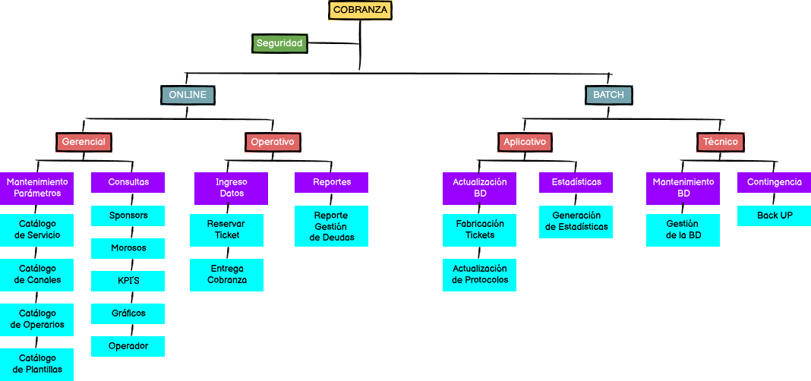
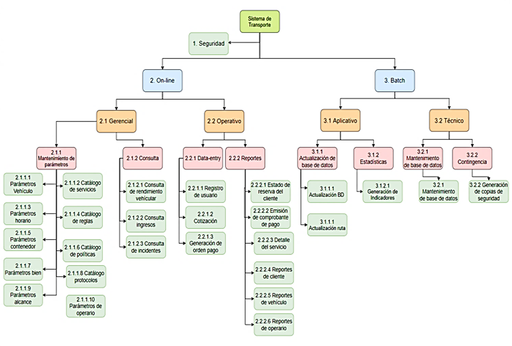
Todo lo que aparece en la arquitectura debe estar diseñado. Si no lo diseñaste, no debe aparecer.
¿Cómo te evalúa el profesor?
FORMATO DE ENTREGA
Presentación PowerPoint · Folder físico con diapositivas impresas · Exposición oral proyectando el trabajo
- Calidad de los mockups y prototipos
- Claridad visual de cada pantalla
- Coherencia entre arquitectura y diseño
- Claridad al exponer el trabajo
- Defensa y justificación de decisiones
- Preguntas al azar a cualquier integrante
El profesor puede preguntarle a CUALQUIER integrante. Todos deben entender TODO el trabajo.
Diseñando cada parte del sistema
Selecciona un componente para ver su explicación detallada, ejemplos y errores frecuentes.
🔐 Control de Acceso — Pantalla de Ingreso
✅ Debe contener
- URL visible y coherente con el sistema
- Nombre o logo del sistema
- Campo de usuario / DNI · Campo de contraseña · Botón de ingreso
- Al menos UN método adicional de autenticación (QR, reconocimiento facial, huella, PIN, etc.)
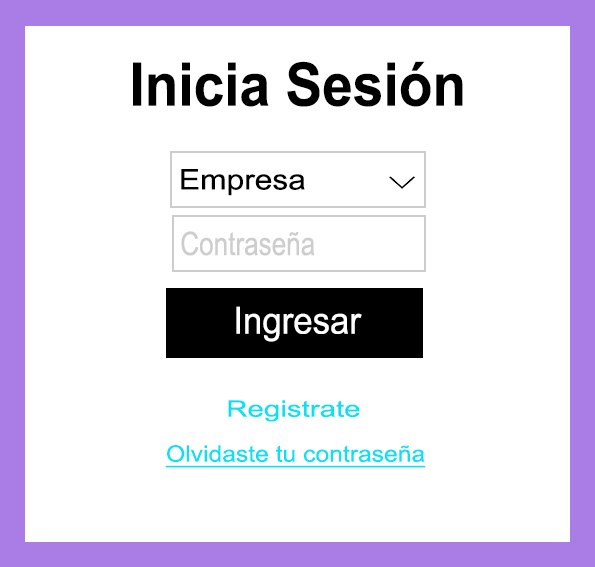
Sistema de Contabilidad — diseño externo sin control de acceso visible
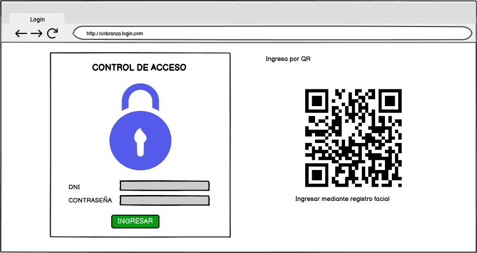
PC1 Cobranzas — Login con URL, DNI, contraseña, código QR y reconocimiento facial
DNI + contraseña. Métodos adicionales: escaneo de QR y reconocimiento facial.
Usuario + contraseña con verificación adicional por PIN o huella digital.
Usuario + contraseña con opción de registro. Diferencia entre cliente, operario y administrador.
Usuario + contraseña con verificación adicional por PIN o huella digital.
El método adicional no es decorativo. El profesor preguntará por qué lo eligieron y cómo funciona en su sistema.
👥 Perfiles y Permisos
✅ Debe mostrar
- Lista de perfiles o roles del sistema
- Módulos accesibles por cada perfil
- Opción de agregar, modificar o eliminar perfiles
- Vista de detalle de permisos por perfil
⚠️ Error común
- Login y perfiles son dos pantallas distintas
- Diseñar solo el login es un error frecuente
🚨🚨 Cuidado 🚨🚨
No te olvides de los parámetros internos a los que cada perfil tiene acceso.
Estos varían respecto al sistema que elegiste.
Siempre debes colocar ejemplos de cómo serían los controles de acceso.
Ejemplos — Sistema de Cobranzas:
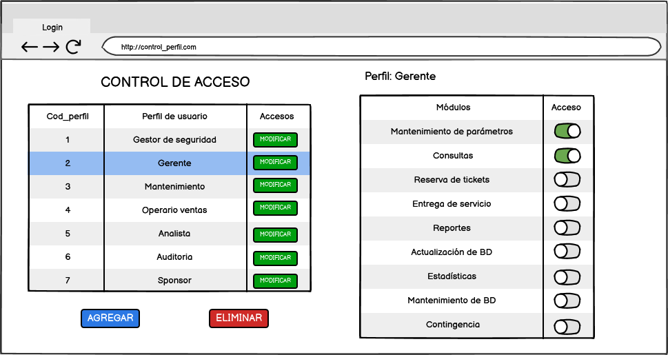
PC1 Cobranzas — Perfiles con módulos y accesos definidos por cada rol: Gerente, Operario, Auditoría, etc.
Ejemplos — Sistema de Almacenamiento:
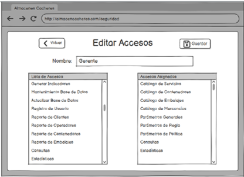
Perfil: Gerente — accesos asignados
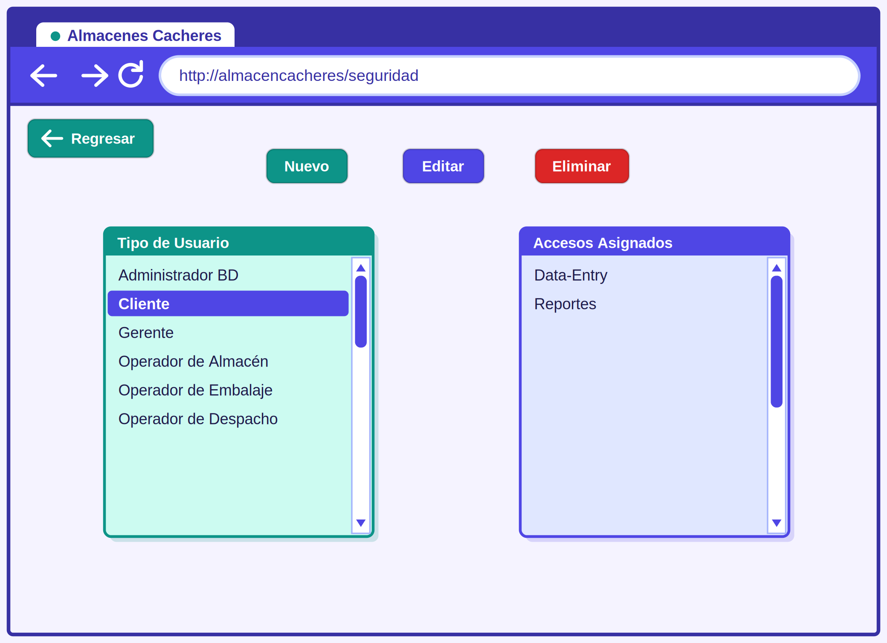
Perfil: Operario — accesos asignados
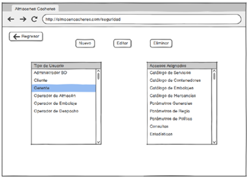
Perfil: Auditor — accesos asignados
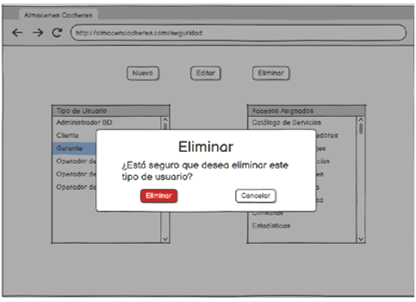
Perfil: Consultor — accesos asignados
"Explícame qué puede hacer el perfil [X] y por qué tiene acceso a esos módulos."
📋 Catálogos — Mantenimiento de parámetros
Sin catálogos, el proceso principal no puede funcionar.
✅ Un catálogo siempre permite:
- Ver la lista de registros existentes
- Agregar un nuevo registro
- Modificar un registro existente
- Eliminar un registro
- Buscar o filtrar registros
- Ver el detalle de un registro seleccionado
💡 ¿Cómo identificar mis catálogos?
Pregúntate: ¿qué datos necesito tener cargados ANTES de que el sistema empiece a
operar?
Esos datos son tus catálogos.
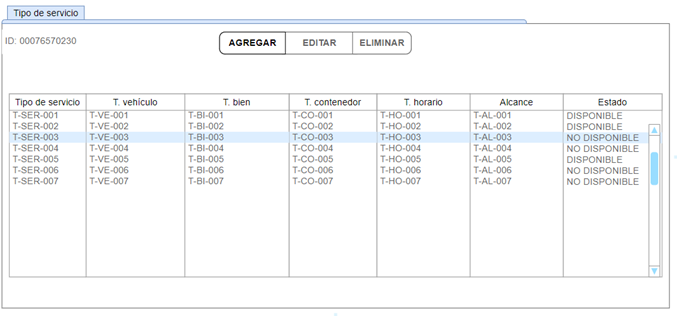
Sistema Transporte — catálogos sin vista de detalle ni estados de edición
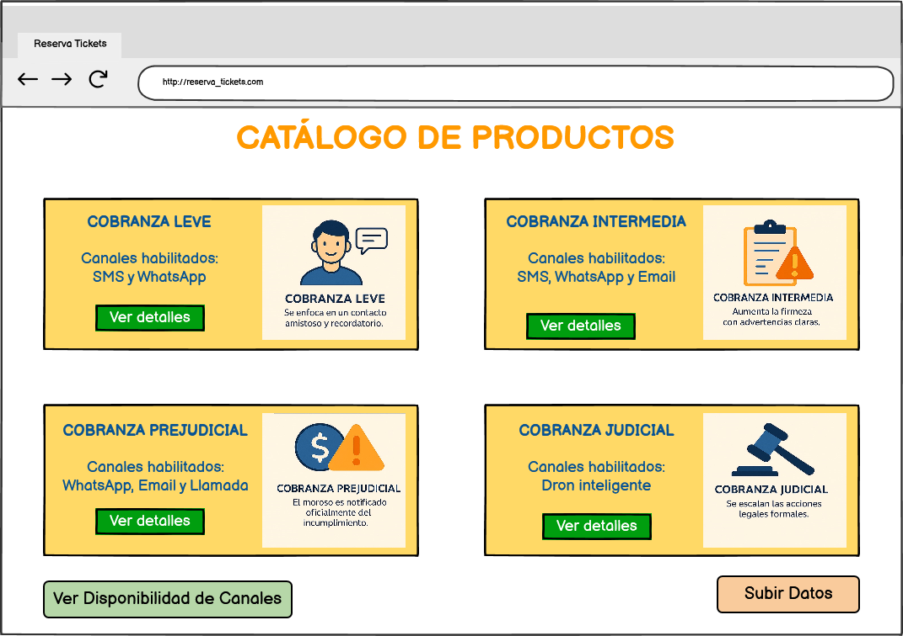
PC1 Cobranzas — Catálogo de Servicios con lista, detalle, campos completos y opciones CRUD visibles
Un catálogo bien diseñado muestra sus tres estados:
Estado vacío
Formulario listo para agregar
Estado con datos
Lista de registros existentes
Estado de edición
Campos pre-cargados para modificar
Catálogos: Servicios (tipos de cobranza con rangos y canales), Canales (SMS, WhatsApp, correo, llamadas, carta notarial), Operarios (autómatas), Plantillas (mensajes por tipo de cobranza).
Catálogos: Clientes (segmentados por tipo), Productos (con precio, stock, descripción e imagen), Estrategias (vinculadas a gestos y tipos de cliente), Políticas (descuentos, garantías, devoluciones).
Catálogos: Vehículos (tipo, capacidad, disponibilidad), Bienes (tipo de carga), Contenedores, Horarios, Operarios (conductores y ayudantes).
Catálogos: Plan de cuentas, Centros de costo, Comprobantes (tipos de documento), Monedas y tipos de cambio.
En el Catálogo darle importancia a cada aspecto de la interfaz y experiencia de usuario (UI/UX)
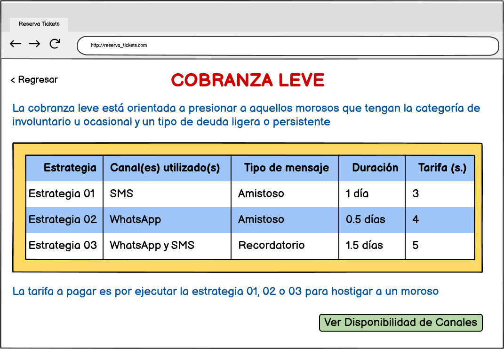
Detalle de interfaz — nivel leve
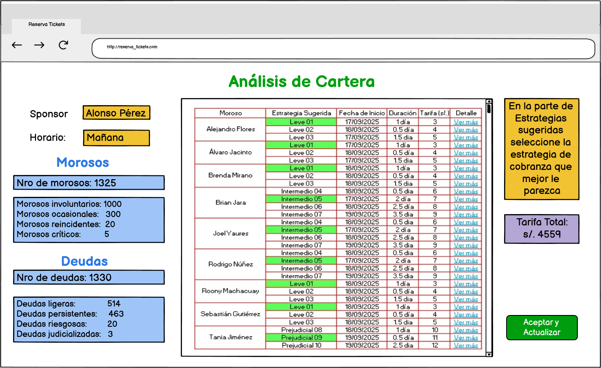
Catálogo — Estrategias de Cobranza
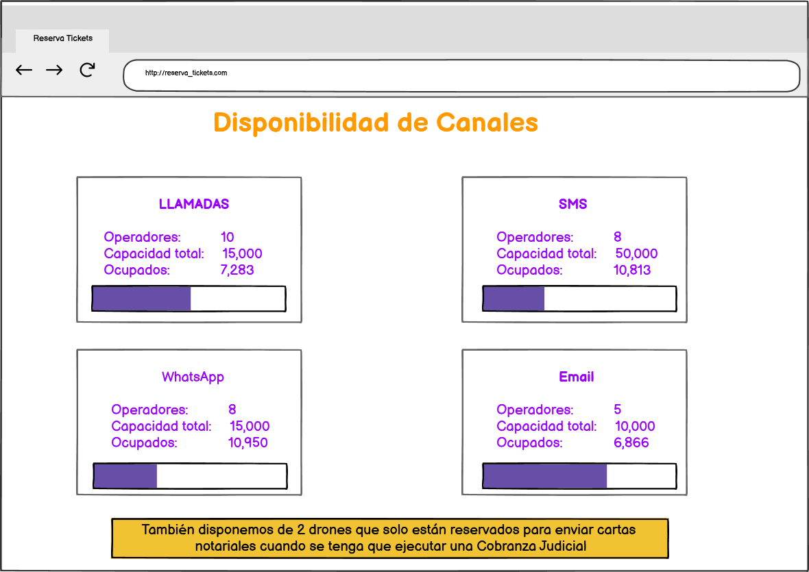
Catálogo — Disponibilidad de Cobranza
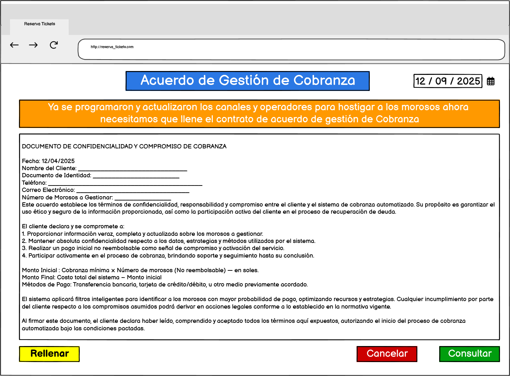
Catálogo — Acuerdo y Compromiso
"Explícame cómo funciona este catálogo. ¿Qué pasa si agrego un nuevo registro?"
⚙️ El Proceso Central — El corazón del sistema
¿Cómo identificar el proceso central?
Pregúntate: ¿para qué existe este sistema?
Cobranzas → Reservar y ejecutar cobranzas · Ventas → Registrar y cerrar una venta
· Transporte → Cotizar y generar orden de pago
✅ Debe mostrar
- Flujo completo paso a paso
- Pantallas intermedias del proceso
- Confirmaciones y mensajes de éxito o error
- Conexión visible con los catálogos definidos
PC1 Cobranzas — Análisis de cartera: selección de estrategia por moroso, tarifas y confirmación
⚠️ Errores frecuentes
- Mostrar solo la pantalla inicial sin el flujo completo
- No mostrar confirmaciones ni mensajes de estado
- Proceso desconectado de los catálogos
"Explícame paso a paso cómo funciona el proceso principal de su sistema."
🔍 Consultas — Información cuando el usuario la necesita
Pantallas que permiten buscar, filtrar y visualizar información del sistema sin modificar ningún dato.
✅ Una consulta bien diseñada tiene:
- Filtros de búsqueda claros (fecha, estado, etc.)
- Lista de resultados con datos representativos
- Vista de detalle al seleccionar un registro
- Opciones de ordenamiento o paginación
💡 Consulta vs. Reporte
CONSULTA → El usuario explora datos en pantalla con filtros propios. No se
descarga.
REPORTE → El sistema genera un documento consolidado. Se puede imprimir o
descargar.
Consultas: Sponsors (información general + detalle), Morosos (estado de deuda, mora, historial), Operadores (actividad y mensajes enviados).
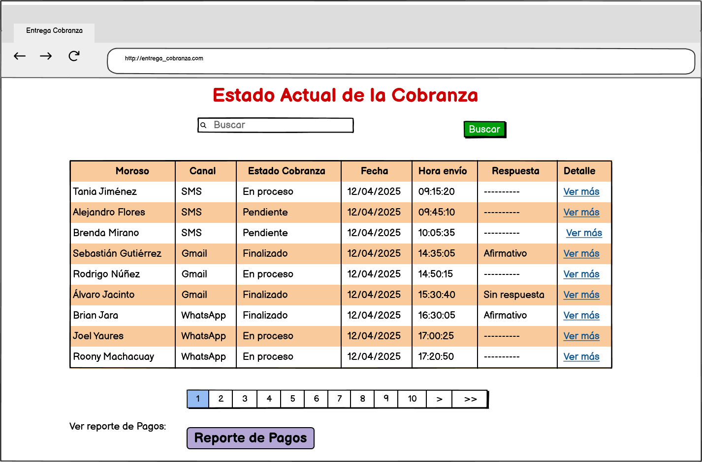
PC1 Cobranzas — Estado actual de cobranza
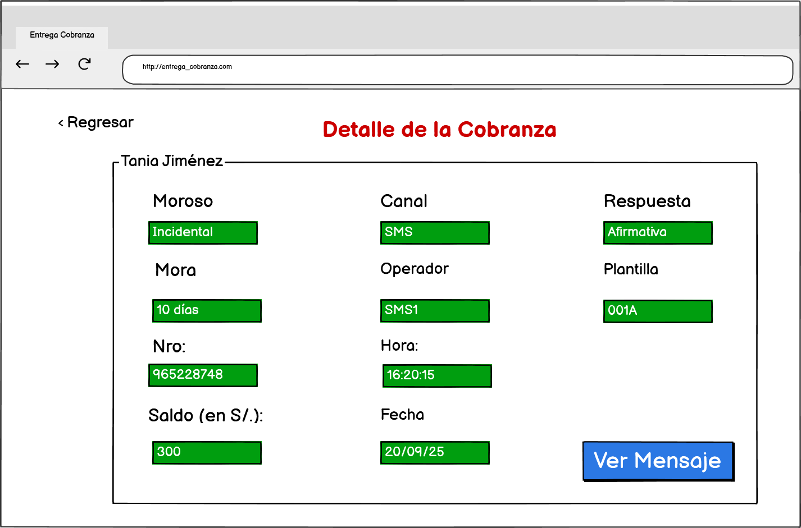
PC1 Cobranzas — Vista de detalle al seleccionar un registro
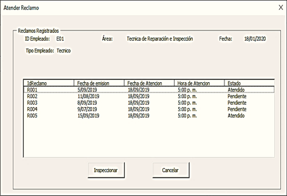
PC1 Reclamos — Consulta con filtros y lista de resultados
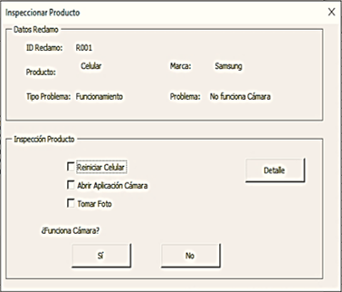
PC1 Reclamos — Vista de detalle del reclamo seleccionado
Consultas: Ventas por periodo, Ventas por producto, Porcentaje de efectividad de estrategia por segmento.
Consultas: Demanda (servicios por periodo), Rentabilidad (por ruta o vehículo), Incidentes (problemas durante el servicio).
Consultas: Estado de cuentas, Movimientos por período, Balance general, Consulta por comprobante.
📊 KPIs — Indicadores Clave de Rendimiento
Un KPI mide qué tan bien está funcionando el sistema respecto a un objetivo definido.
✅ Un KPI bien diseñado incluye:
- Nombre del indicador · Fórmula de cálculo · Unidad de medida (%, soles, días, etc.)
- Valor actual · Valor meta o esperado · Período de análisis
- Fuente de los datos · Responsable del análisis
Ejemplos:
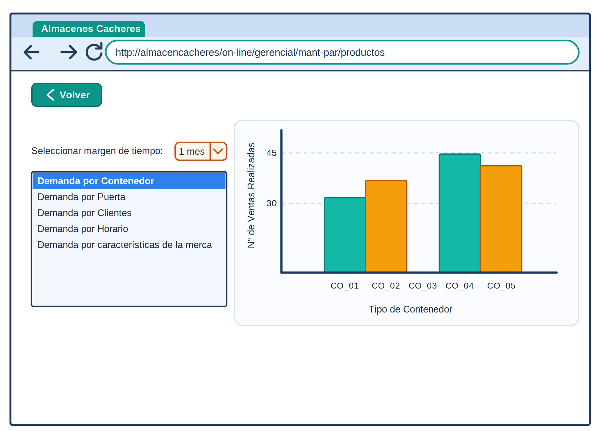
Sistema de Almacenamiento — KPIs
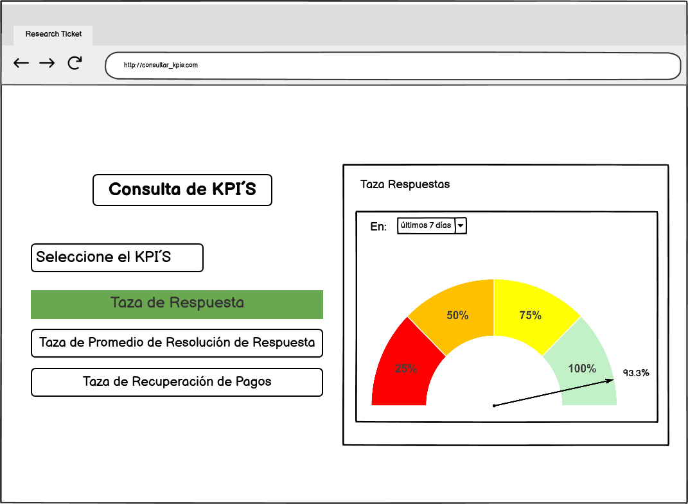
PC1 Cobranzas — KPIs
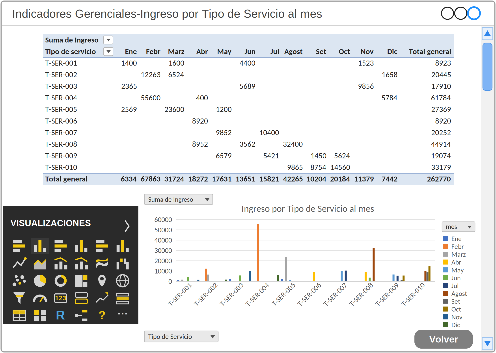
Sistema de Transporte — KPIs (1)
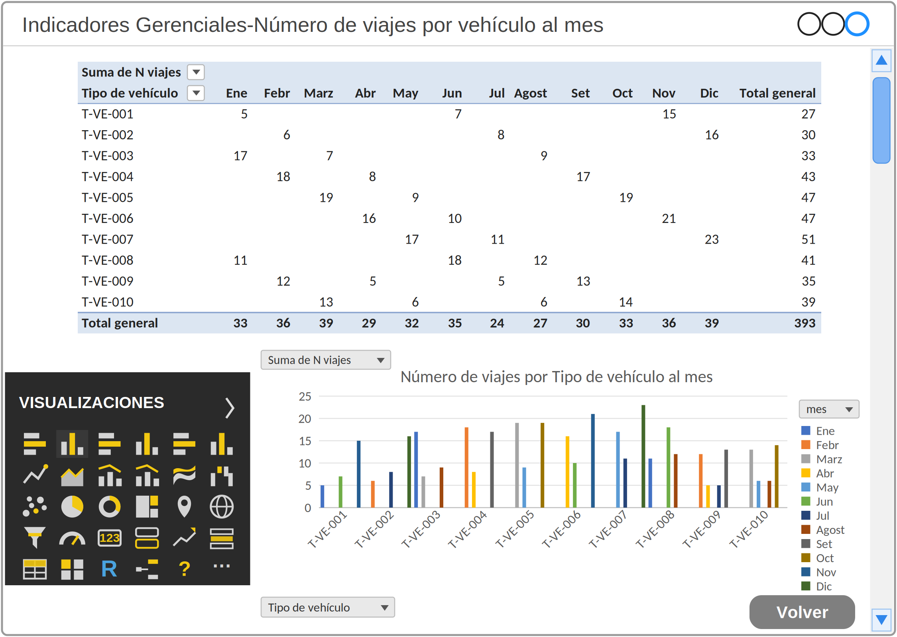
Sistema de Transporte — KPIs (2)
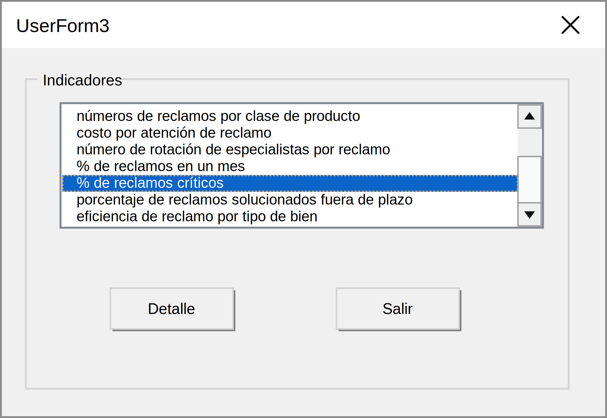
Sistema de Reclamos — KPIs (1)
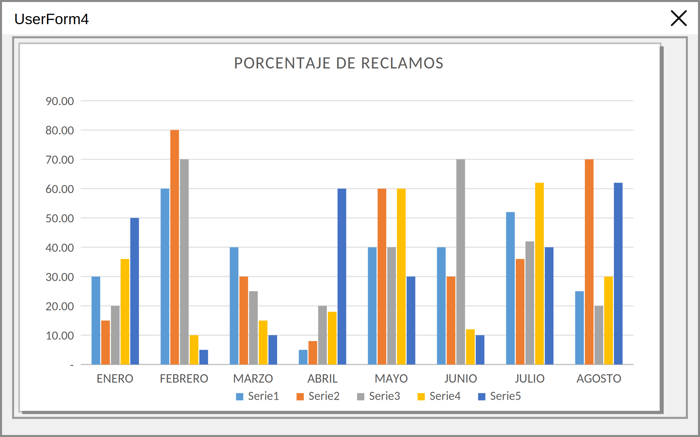
Sistema de Reclamos — KPIs (2)
"¿Para qué sirve este KPI? ¿Cómo se calcula y quién es responsable de analizarlo?"
📈 Gráficas — Visualización de datos
✅ Una gráfica bien diseñada tiene:
- Título descriptivo que explica qué muestra
- Tipo de gráfica coherente con los datos
- Ejes o leyendas claramente etiquetados
- Filtros de período o categoría
- Datos representativos (no vacía)
💡 KPI vs. Gráfica
KPI → Un valor puntual con meta
"Tasa de respuesta: 72% (meta
80%)"
GRÁFICA → Una tendencia visual
"Evolución de la tasa en 6 meses"
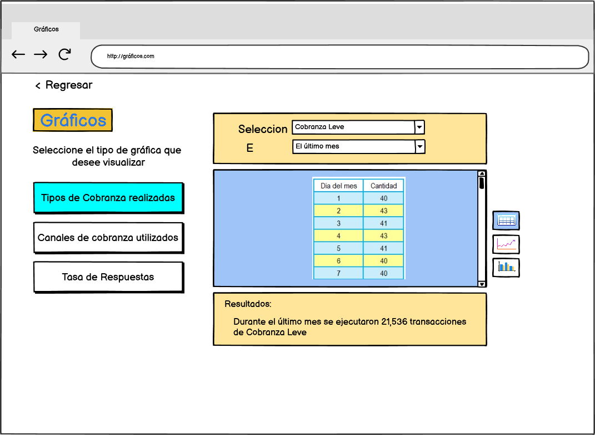
PC1 Cobranzas — Gráfica de tipos de cobranza con filtros por período
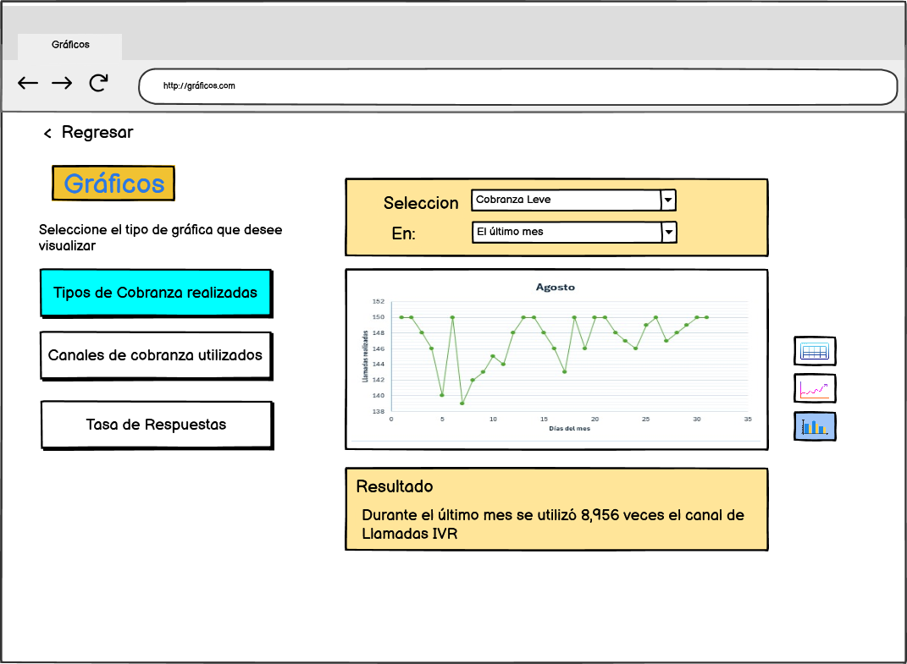
PC1 Cobranzas — Gráfica de evolución por período
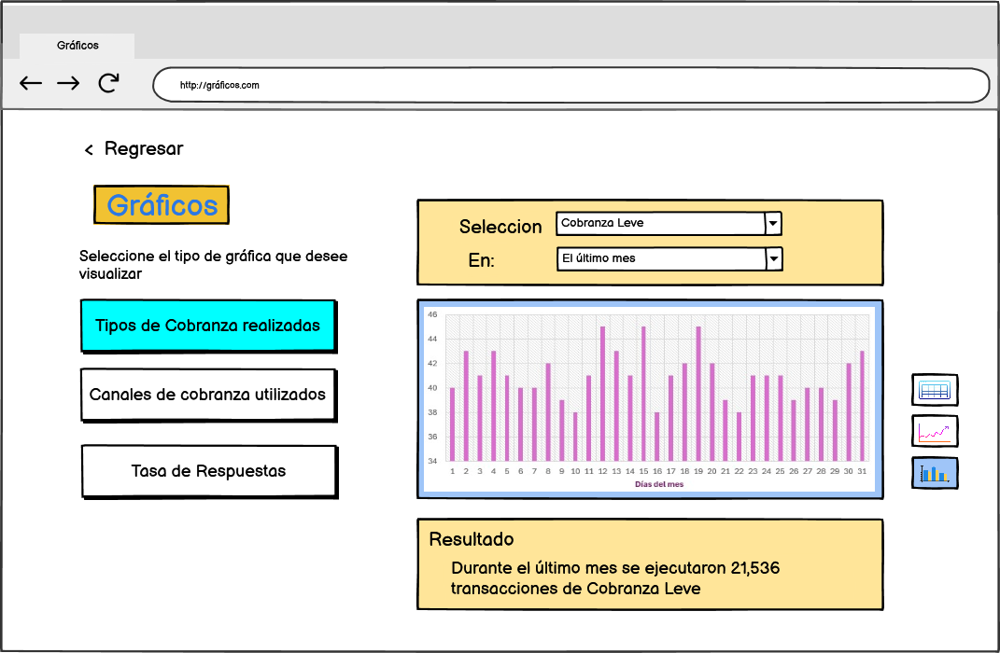
PC1 Cobranzas — Gráfica de distribución por categoría
Gráficas sugeridas: Servicios por ruta (barras), Rentabilidad mensual (líneas), Distribución por tipo de carga (pastel).
Gráficas sugeridas: Ingresos vs. Egresos por mes (barras apiladas), Evolución del balance (líneas), Distribución por cuenta (pastel).
📄 Reportes — Documentos consolidados
✅ Un reporte bien diseñado tiene:
- Título y período que cubre
- Datos consolidados y procesados
- Opción de descarga o impresión (PDF, Excel)
- Filtros para generar el reporte deseado
- Resumen o totales al final
CONSULTA vs. REPORTE
CONSULTA: Permite al usuario explorar los datos directamente en pantalla, sin
necesidad de descargar información.
REPORTE: Es un documento consolidado generado por el sistema, que puede ser
impreso o descargado para su análisis o archivo.
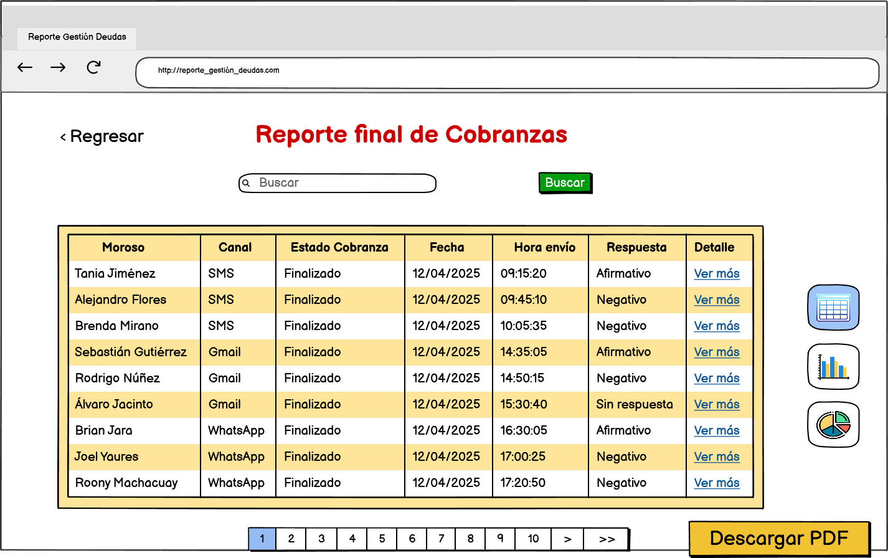
PC1 Cobranzas — Reporte final con estado de cada moroso, respuestas y calificación
Reporte de ventas con resumen por período, totales por producto, estrategias más efectivas y comparativa con período anterior.
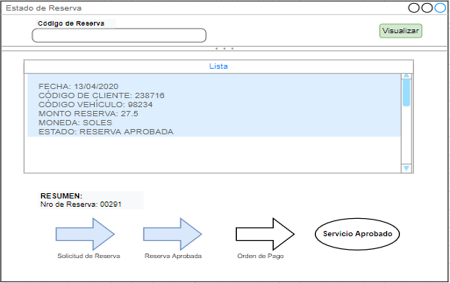
Sistema Transporte — Estado de reserva, comprobante de pago y detalle de servicio
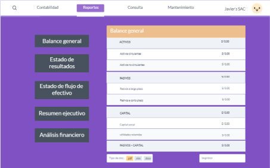
Sistema Contabilidad — Balance general y estado de resultados
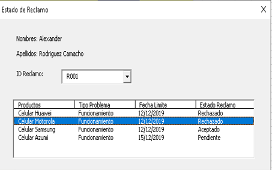
Sistema Reclamos — Reporte consolidado de reclamos por período
📜 Protocolos — Las reglas del proceso
Un protocolo define las reglas y condiciones bajo las cuales el sistema ejecuta su proceso central.
✅ Un protocolo bien diseñado muestra:
- Las etapas o niveles del protocolo
- Las condiciones que activan cada etapa
- Historial de cambios de protocolo
- Fecha y motivo de cada cambio
- Conexión clara con el proceso central
⚠️ Errores frecuentes
- Sin condiciones definidas (¿cuándo cambia de etapa?)
- Sin historial de cambios
- Desconectado del proceso central
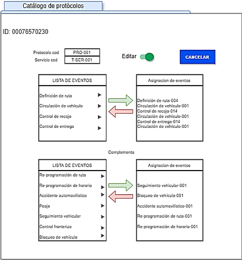
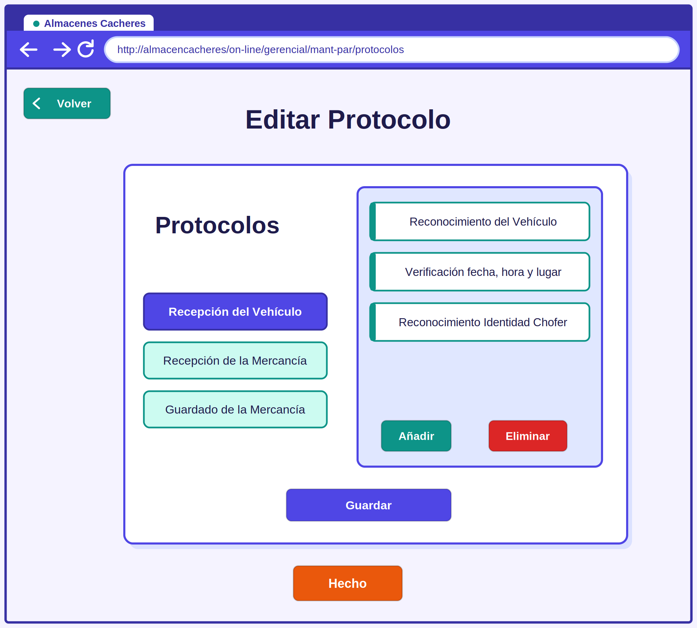
Sistema de Almacenamiento — Protocolo de procesos
"¿Cómo definieron su protocolo? ¿Qué condición hace que un caso pase de una etapa a la siguiente?"
🤖 Módulo BATCH — Procesos automáticos
✅ El módulo BATCH suele incluir:
- Actualización de tablas maestras
- Generación de estadísticas
- Fabricación de tickets / documentos
- Actualización de protocolos
- Procesos de cierre periódico
💡 ON-LINE vs. BATCH
ON-LINE → El usuario interactúa en tiempo real.
BATCH → El sistema trabaja solo, sin usuario presente, en horario
programado.
NO todo proceso es BATCH. Si requiere la acción de un usuario para ejecutarse, es ON-LINE.
Fabricación de tickets de cobranza, actualización de protocolos según mora acumulada, generación de estadísticas de operadores.
Actualización de atributos de clientes (total_cierres_ventas, cant_entradas), actualización de efectividad de estrategias, generación de KPIs.
Actualización de disponibilidad de vehículos, generación de estadísticas de demanda por ruta, actualización de tarifas.
Cierre mensual de período contable, generación de balances automáticos, actualización de tipos de cambio, cálculo de depreciaciones.
💾 Backup y Mantenimiento de BD
💾 BACKUP — Debe mostrar:
- Frecuencia de backup programado
- Historial de copias realizadas
- Opción de backup manual
- Restauración de versión anterior
- Destino del backup (disco, nube, etc.)
🔧 MANTENIMIENTO BD — Debe mostrar:
- Monitoreo de consultas lentas
- Gestión de datos obsoletos
- Análisis de frecuencia de datos
- Acciones correctivas disponibles
Ejemplos reales:
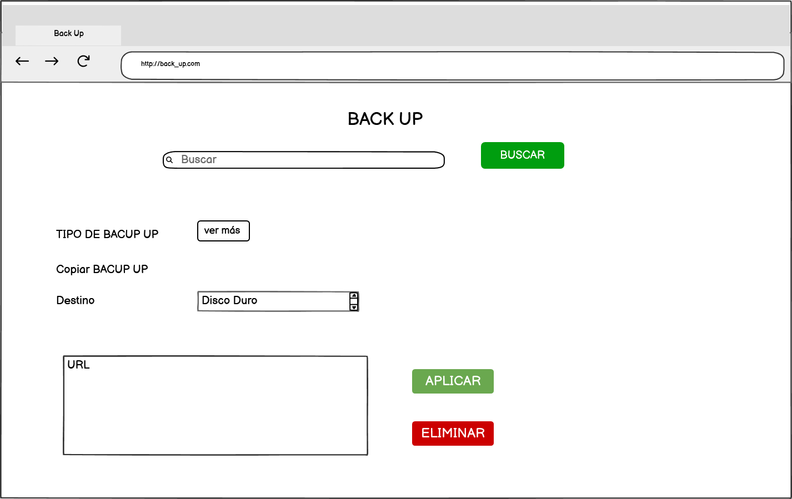
PC1 Cobranzas — Backup con BUSCAR BD, TIPO DE BACKUP, AGREGAR / ELIMINAR
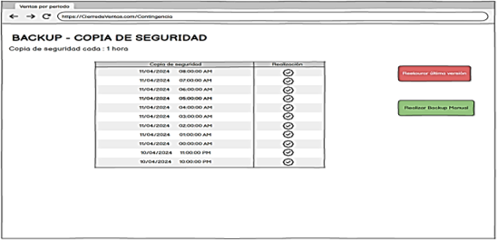
Cierre de Ventas — Historial por horas, backup manual y opción de restaurar
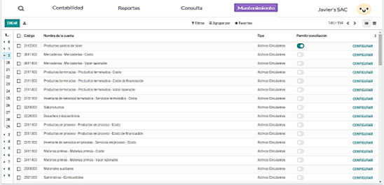
PC1 Contabilidad — Backup con opciones de contingencia y salud del sistema
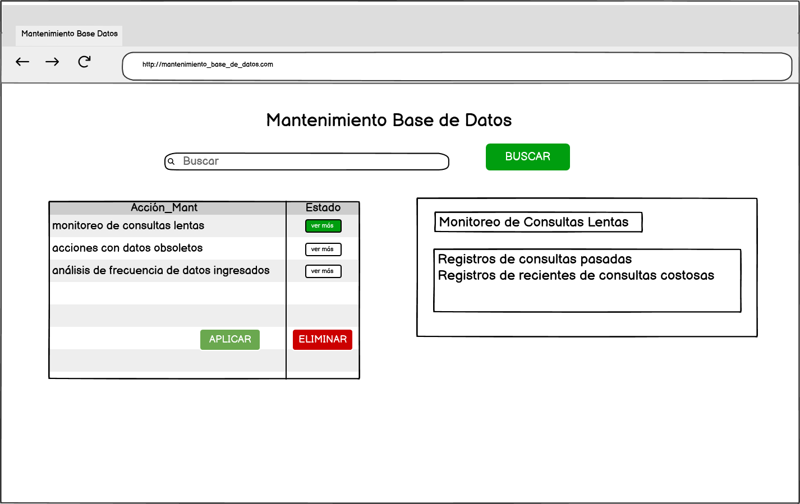
PC1 Cobranzas — Mantenimiento con monitoreo de consultas lentas, datos obsoletos y frecuencia de datos
Estos módulos se olvidan con frecuencia. El profesor los revisa y espera que expliquen para qué sirve cada opción.
Lo que el profesor siempre pregunta
No es suficiente diseñarlo bien. Debes poder explicarlo con claridad cuando el profesor te pregunte.
El profesor pregunta al azar a cualquier integrante. No hay uno que "sabe más" — todos deben saber todo.
Tips — Antes de exponer
Marca cada punto que ya tienes listo. Llega con todo completado.
- La arquitectura muestra TODOS los módulos que diseñé
- Tengo pantalla de login con método adicional de autenticación
- Tengo pantalla de perfiles con accesos definidos por cada rol
- Mis catálogos muestran los tres estados: lista, detalle y edición
- El proceso central tiene flujo completo con confirmaciones
- Mis KPIs tienen fórmula, valor actual y meta definida
- Mis gráficas tienen título, ejes y datos representativos
- Tengo backup con historial y opción de restauración
- Todos los integrantes pueden explicar cualquier pantalla
- Tengo el folder físico impreso listo para entregar
¡Éxito en su PC1!
El diseño externo no es decoración.
Es la forma en que demuestras que entiendes cómo funciona tu
sistema.